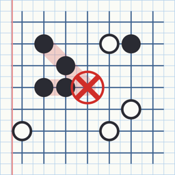

禁じ手が見える五目並べ
コンピュータも、黒の禁じ手を守る。iPhone と iPad の五目並べ（連珠）です。
15路の盤で、コンピュータか、となりの人と1台で打つ五目並べです。黒の禁じ手（三三・四四・長連）を連珠の決まりどおりに判定し、コンピュータが黒のときも、同じ判定で禁じ点には打ちません。
- 打つ前に禁じ点が見えます。黒の番になると、打つと禁じ手になる点に赤の×が出ます。×を押すと「三三」「四四」「長連」の理由と、重なっている線を赤で見せます
- 飛び三・一直線の四四も数え、止められて達四にできない三や、四にする点が禁じ点の三は、三と数えません。5つができる手は、ほかの形が重なっても勝ちです
- 「禁じ手の見分け」30問：「？」の点が、打てる・三三・四四・長連のどれかを当てます
- ルールは3つ（連珠／三三だけ禁止／禁じ手なし）。先手・後手を毎回選べ、強さは5段。1手もどす・ヒント・手の番号・戦績もあります
- 登録・課金・通知はありません。記録はこの端末の中だけに保存します。画面のいちばん下に小さな広告が出ます（画面いっぱいの広告・動画の広告は出さず、広告の音は消しています）